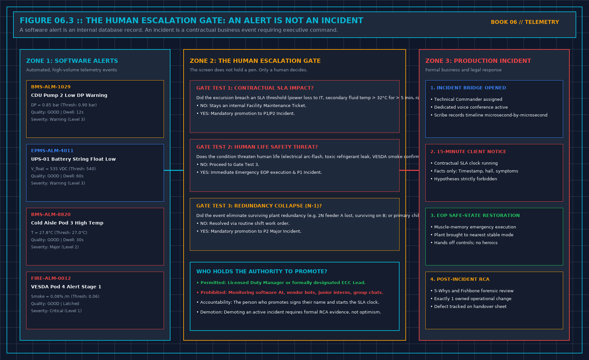

Grouping alarms is not a cause: First-Principles Data Center Engineering Protocol
Direct Answer Block: Why algorithmic alarm grouping by time window does not prove physical root cause—and how to build directed parent-child topological suppression trees. In mission-critical data center commissioning and operations, engineers enforce this boundary using deterministic physical equations, calibrated field instrumentation, and auditable sign-off gates rather than relying on vendor brochure summaries, uncalibrated software plots, or verbal assurances. Every measurement and state transition must be recorded with synchronized UTC timestamps and explicit pass/fail thresholds before a signature is granted.

A storm is many alerts that may be one event. It is not a hundred incidents, and it is not a root cause. Grouping by a window you wrote before the night is allowed. Write "these arrived together." Do not write "this one caused those" unless a person, or a rule a person can read, tied them by a named path. A shared feed. A shared collector. A change window already open. The clock alone is not a path.
A compressed row has to open. Count, sources, measurement times, which were live. A row that cannot be opened has deleted alerts. Deleted alerts do not clear the board.
Keep the count you acted on. Late alerts may join the record. They do not silently change the number you used at the time. Two groups in one hour stay two groups unless a path already on the diagram ties them. Do not merge them to make the board shorter.
A storm of stale points is a source failure, not a hundred plant failures. Silence pages from points that are not live. Leave the service incident open if the service is already affected. Those are two sentences.
1. First-Principles Engineering Formulation and Governing Mathematics
In high-density data center environments, verbal summaries and qualitative status tiles routinely obscure incipient physical failures. Whether auditing a 120 kW liquid-cooled rack boundary, evaluating a 1-second telemetry time series, or verifying plant redundancy prior to handover, the governing physical relationship for this protocol is expressed as:
When any term on the left-hand or right-hand side of this relationship is left unmeasured, inferred from an uncalibrated nameplate, or averaged across an unverified time window, the resulting engineering record cannot support a valid operational signature. Field engineers must verify each physical variable independently using NIST/ISO 17025 traceable instruments before proceeding to the next gate in the sequence.
| Audit Verification Parameter | Unacceptable / Defective Field Practice | Auditable First-Principles Requirement | Mandatory Action on Failure |
|---|---|---|---|
| Primary Boundary Definition | Implied by vendor brochure or slide deck | Explicitly bounded on stamped P&ID / SLD with tag IDs | Halt acceptance; issue formal boundary clarification |
| Measurement & Telemetry Proof | Single uncalibrated display reading or 60-sec average | Calibrated Class A/0.5S sensor with 1-sec UTC timestamp | Reject dataset; classify point as 0x40 Stale or 0x80 Bad |
| Pass / Fail Acceptance Gate | Qualitative "Looks OK" or "Within Normal Range" | Quantitative numerical corridor cited from revision in force | Log Category A/B defect; withhold retainage or permit |
| Custody & Sign-Off Record | Single bundled "Accepted" signature at end of meeting | Scoped, dated sentence naming exact proved & unproved lines | Strike unsupported claims; issue Conditional Refusal |
2. Deep-Dive Technical Protocol and Field Implementation
The following field protocol—adapted directly from Volume 06: When a Monitor May Speak—establishes the step-by-step verification mechanics required on the data hall floor:
When a major electrical or mechanical failure strikes a hyperscale data center, the supervisory console does not receive a polite, single notification stating "Transformer 1 Tripped."
Instead, within a six-second window, the console is hit by an explosive Alarm Storm of 500 to 2,000 cascading alarms:
- High-voltage switchgear reports breaker trip.
- 480V distribution boards report under-voltage.
- Uninterruptible power supplies report static bypass out of frequency.
- UPS battery strings report rapid high-rate discharge.
- Central chillers report compressor VFD DC-bus undervoltage shutdown.
- Primary chilled water pumps report loss of flow.
- Hundreds of computer room air handling (CRAH) units report fan failure.
- Thousands of server rack power distribution units report loss of A-feed input voltage.
| TOPOLOGICAL ALARM STORM SUPPRESSION | |
|---|---|
| [UPSTREAM ROOT EVENT] 35kV Utility Feeder Breaker Trip (Time: T_0) | |
| ↓ | |
| ↳ [PARENT NODE] Main Incomer Breaker Open | |
| ↓ | |
| TOPOLOGICAL INGESTION ENGINE: Ingests parent event; | |
| ACTIVELY QUENCHES all downstream dependent symptom alarms: | |
| ✕ [SUPPRESSED] 480V Substation Under-Voltage | |
| ✕ [SUPPRESSED] UPS Transfer to Battery (12 units) | |
| ✕ [SUPPRESSED] Chiller Compressor Trips (4 units) | |
| ✕ [SUPPRESSED] CRAH Fan Low Airflow (32 units) | |
| ✕ [SUPPRESSED] Server Rack PDU A-Lost (480 racks) | |
| ↓ | |
| ↓ | |
| [CONSOLIDATED DISPLAY] Single P1 Incident Ticket: "Feeder A Incomer Open" | |
| Symptom count: 548 suppressed \ | Surviving: Bus B OK |
An operator presented with 2,000 screaming alarm banners on five monitors is rendered cognitively blind. The critical root-cause alarm—the tripped utility feeder breaker—is buried on page 18 of the alarm list, while the operator fruitlessly attempts to silence hundreds of secondary fan alarms.
The Principle of Topological Dependency Masking
A professional data center supervisory engine must implement Topology-Aware Ingestion:
If an upstream physical parent node transitions into an unpowered or isolated state, the supervisory engine must automatically quench and consolidate all downstream child symptom alarms.
Core Suppression Rules:
- Breaker-Driven Electrical Quenching:
When an electrical circuit breaker opens (e.g., SWG-01-M1), the monitoring engine identifies all downstream electrical panels, transformers, UPS rectifiers, and PDUs fed from that breaker bus. The system raises a single primary incident for the breaker trip; it mutes and collapses all downstream under-voltage alarms into a collapsible symptom list attached to the parent ticket.
- Pump-Driven Hydraulic Quenching:
When a primary chilled water pump trips on an electrical fault (P-01 Status == STOPPED), the engine immediately quenches the downstream "P-01 Low Discharge Flow" and "P-01 Low Differential Pressure" alarms. Reporting that an unpowered pump is failing to generate flow is noise. The alarm belongs to the pump motor trip, not the fluid flow.
- Chiller-Driven Thermal Quenching:
When a central chiller shuts down, downstream chilled water supply temperature alarms for that specific evaporator barrel are correlated directly to the chiller shutdown event.
Topological suppression reduces 500 chaotic alarms into exactly one actionable incident ticket.
Time-Aligned Correlation Windows
Parent-child relationships must be evaluated within a strict, pre-calculated temporal correlation window:
When an upstream electrical event occurs:
- All alarms occurring along that electrical branch within T_window are ingested into the correlation engine.
- The topological root (the highest breaker in the single-line diagram) is designated as the Root Cause Candidate.
- The control room horn sounds exactly once. It does not re-sound 500 times for every downstream branch breaker. Operators maintain cognitive composure to execute the Emergency Operating Procedure.
Preserving the Count and the Audit Trail
Suppression does not mean deletion.
Muting downstream symptom alarms on the live operator console must never delete those records from the historical database.
The consolidated incident ticket displayed on the Duty Manager's workstation must display:
- The Primary Root Event:
INCIDENT #1049 :: 35kV Feeder A Breaker Trip (09:14:22 UTC). - The Correlated Symptom Count:
548 Downstream Alarms Ingested & Collapsed. - The Drill-Down Capability: A single click allows the engineer to expand the ticket and inspect every individual millisecond timestamp, voltage decay curve, and relay trip flag across all 548 devices.
An operations manager who suppresses alarms by permanently disabling database logging has destroyed the legal and forensic record. An operations manager who uses topological dependency masking presents a clean, actionable screen to the operator while preserving full forensic fidelity in the archive.
Decisions to Record
- The physical single-line diagrams (SLD) and mechanical P&IDs ingested into the topological correlation engine.
- The exact temporal correlation window (T_window = 2.0 s) configured for alarm storm collapsing.
- The rule mandating that control room sirens trigger once per topological incident rather than once per symptom.
- The audit verification confirming that all collapsed symptom alarms remain fully inspectable in the database.
3. Field Verification Checklist and Instrumentation Hygiene
To execute this protocol without introducing measurement bias or scope ambiguity, the responsible engineer enforces four mandatory field rules:
- Instrument Traceability Before Observation: Verify that every thermometer (4-wire Pt100 RTD Class A), pressure transducer (≤ ± 0.1% span), flowmeter, balometer, or power analyzer carries a current calibration certificate and passes a pre-test zero/span check on the day of the walk.
- Synchronized Time-Series Capture: Align all digital loggers and gateway pollers to a single UTC reference clock (via IEEE 1588v2 PTP at ± 1 ms for electrical Sequence of Events, or NTP at ± 10 ms for thermal/hydraulic dwells). Never merge unsynchronized CSV files by row index.
- Explicit Isolation of Disturbances vs. Control Handles: Hold upstream supply temperatures, parallel cabinet loads, and containment door states constant during the observation dwell so that transient plant drift is never mistaken for steady-state equipment performance.
- Written Record Prior to Signature: Record every boundary tag, measured value, uncertainty tolerance, and open limitation in ink on the controlled project sheet before leaving the equipment line-up.
Frequently Asked Questions (FAQ)
Why does "Grouping alarms is not a cause" matter during high-density data center commissioning and operations?
Why algorithmic alarm grouping by time window does not prove physical root cause—and how to build directed parent-child topological suppression trees. When project teams bypass this rule to meet a commercial schedule milestone, unverified physical assumptions—such as hidden hydraulic pressure drops, unlogged polling gaps, unblanked bypass leakage, or uncalibrated sensor offsets—transfer directly into live 24/7 production as latent single points of failure.
How do you quantitatively verify compliance with "alarm storm suppression root cause vs correlation" on the physical floor?
Compliance is verified by executing the governing mathematical balance (Suppress(Childj) \iff State(Parenti) = \textttTRIPPED \land (i → j) ∈ ESLD/P\ ID) using independent, calibrated field instruments across a stabilized steady-state dwell window (minimum 15 to 30 minutes for thermal and hydraulic systems), and confirming that the discrepancy between primary and secondary measurements remains strictly within the pre-declared acceptance band.
What should an engineer do if a contractor or vendor submits a report that violates this protocol?
The reviewing engineer must refuse to sign the broad acceptance sentence, mark the specific line item as Unproved / Defective on the official audit sheet, and either require a witnessed re-test under a corrected script or isolate the unproved scope under a time-bounded Conditional Acceptance with a 150% to 200% financial retainage escrow holdback.
From When a Monitor May Speak, Tristan, Data Center Field Guides.
Related: A monitoring point needs a clock.
Master the Complete Protocol: When a Monitor May Speak
BMS/EPMS Telemetry, Sequence of Events (SOE), Alarm Storm Suppression, and Sensor Quality Flags
Stop relying on contractor spreadsheets and vendor marketing claims. This field guide provides the complete, auditable verification binder—including physical equations, inspection stations, acceptance thresholds, and signed refusal templates.